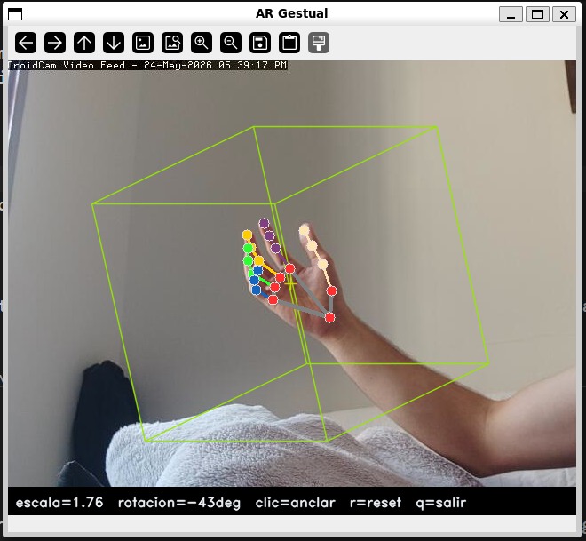
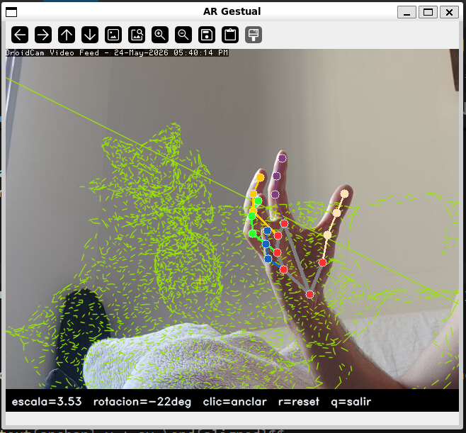
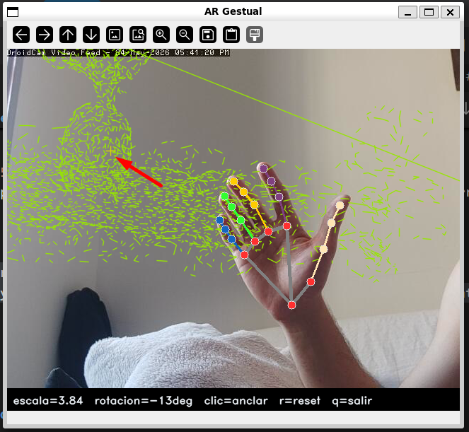

Ej. 7 — Realidad Aumentada Gestual (Optimizado)¶
Enunciado
Crea un efecto de realidad aumentada en el que el usuario desplace objetos virtuales hacia posiciones marcadas con el ratón, controlando su escala y rotación en tiempo real de forma fluida.
Parámetros clave¶
| Parámetro | Valor | Descripción |
|---|---|---|
_BASE_PX |
80/200 px | Radio base dinámico en píxeles. Se autoajusta a 80 para el cubo por defecto y a 200 al cargar modelos .obj complejos para optimizar su visibilidad. |
_SCALE_MIN |
0.1 | Escala mínima del objeto AR (mano lejana) |
_SCALE_MAX |
4.5 | Escala máxima del objeto AR (mano cerca) |
_XY_FRAC |
0.60 | Fracción del ancho/alto del frame para el offset XY de palma |
_SMOOTH |
0.25 | Coeficiente α del filtro exponencial (escala, yaw, XY) |
_SMOOTH_RY |
0.18 | Coeficiente α del filtro exponencial para roll (más conservador) |
max_edges |
2 000 - 4 000 | Límite de aristas al cargar un modelo .obj denso (valores menores aumentan los FPS) |
Carga del modelo y corrección de orientación¶
ARViewer admite un fichero .obj generado por reconstrucción 3D (como COLMAP o VGGT); si no se especifica u ocurre un error, utiliza un cubo unitario de referencia.
Debido a que OpenCV utiliza un sistema de coordenadas de pantalla donde el eje Y crece hacia abajo, los modelos tradicionales se cargan invertidos ("boca abajo"). Para solucionar esto sin sobrecargar el bucle de renderizado, se invierte físicamente el signo del eje Y en la matriz de vértices inmediatamente después de la lectura del archivo:
| extra_8_7_2/ar_viewer.py — load() con corrección de orientación | |
|---|---|
El asistente load_obj maneja dos casos:
- Mallas con caras (
.objcon líneasf): extrae aristas únicas de cada polígono. - Nubes de puntos sin caras (salida típica de COLMAP/VGGT exportada directamente): computa el
ConvexHullde los vértices para derivar aristas y mostrar la envolvente del objeto.
| extra_8_7_2/ar_viewer.py — load_obj() gestión de nube de puntos | |
|---|---|
Anclaje con ratón y desplazamiento gestual¶


El objeto se posiciona dinámicamente combinando un punto de anclaje estático fijo y un desfase continuo controlado por la palma de la mano:
Los desfases se derivan de la posición normalizada de la palma devuelta por MediaPipe:
| extra_8_7_2/ar_viewer.py — update() | |
|---|---|
Cuando la palma está perfectamente centrada (norm = 0.5), el desfase es nulo y el objeto geométrico descansa exactamente sobre la cruz de anclaje amarilla definida por el clic del usuario. Desplazando la palma se puede arrastrar el objeto hasta ±30 % del ancho/alto del frame a partir del ancla.

Renderizado de alto rendimiento (Vectorizado)¶
Para evitar caídas de frames y tirones al procesar modelos con alta densidad de polígonos (como nubes de puntos detalladas), se prescinde por completo de los bucles iterativos tradicionales de Python (for ... cv.line).
En su lugar, el renderizado se delega de forma nativa a las rutinas optimizadas de OpenCV en C++ agrupando todas las conexiones en matrices de segmentos independientes utilizando cv.polylines:
Decisiones de diseño¶
Separación ancla / offset¶
El ratón fija el centro del objeto (ancla) y la mano solo aplica un offset relativo. Esto permite anclar el objeto sobre un elemento de la escena con precisión y luego moverlo con la mano sin tener que mantener la palma exactamente en ese punto.
Vectorización de geometría¶
Pasar de un procesado secuencial por línea a una inyección masiva con cv.polylines reduce el overhead de la máquina virtual de Python de forma crítica, permitiendo tasas estables por encima de los 60 FPS en hardware convencional.
Sacrificio de Z-Depth dinámico¶
Se ha eliminado la modulación dinámica de color basada en la profundidad individual de la arista (z-depth). Aunque este efecto aportaba pistas visuales de volumen, el coste de calcular el color arista por arista en Python destruía la experiencia interactiva en tiempo real. Se ha priorizado la fluidez absoluta utilizando un color plano optimizado.
Suavizado exponencial asimétrico¶
Se mantienen factores de atenuación diferenciados (0.25 frente a 0.18). El valor más estricto se aplica al cabeceo (roll), absorbiendo de forma eficaz el ruido inherente que sufre la estimación de profundidad Z en el pipeline de tracking gestual.
Limitaciones¶
Limitaciones conocidas
- La proyección sigue siendo ortográfica: no existe corrección perspectiva real ni puntos de fuga, por lo que el objeto no varía su tamaño relativo según su posición tridimensional respecto al eje óptico de la cámara.
- Con modelos complejos (muchos vértices), el
ConvexHullpara nubes sin caras puede ser muy lento o producir geometría incorrecta. - Modelos con densidades masivas que superen las decenas de miles de aristas requerirán un submuestreo más agresivo mediante el ajuste del parámetro
max_edgesen la inicialización para salvaguardar el rendimiento de la CPU.